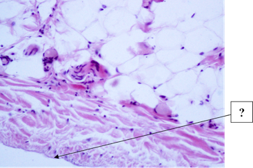
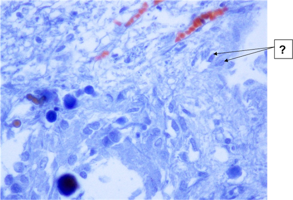
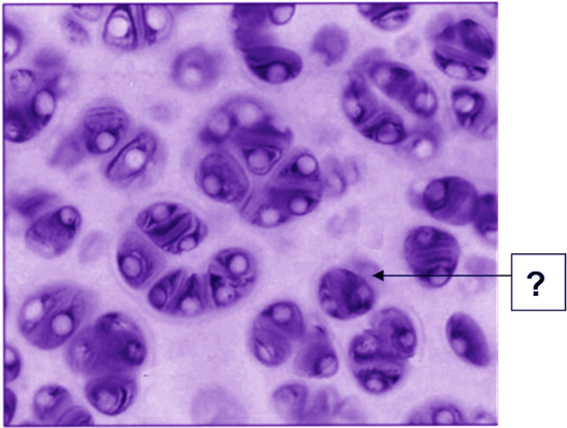

Эпителий продуцирует амниотическую жидкость
Образуется на 8 сутки эмбриогенеза
Участвует в развитии органов дыхания и пищеварения
Входит в состав плодной (зародышевой) части плаценты
Покрывает пуповину

Эндотелий внутренней оболочки артерии эластического типа
Эндотелий предсердной поверхности клапана сердца
Эндотелий внутренней оболочки артерии мышечного типа
Эндотелий эндокарда сердца
Мезотелий эпикарда сердца

Питуициты
Глиоциты эпифиза
Тельца Херринга задней доли гипофиза
Мозговой песок эпифиза
Базофилы передней доли гипофиза
Пинеалоциты
Дают начало капиллярам как открытой, так и закрытой систем кровообращения
В эндотелиоцитах присутствуют сократительные элементы
Размещены в красной пульпе
Лишены гладкомышечных клеток
Окружены муфтой из ретикулярных клеток и волокон

Зона молодого хряща
Остеоны
Интертерриториальный матрикс
Минерализованный межклеточный матрикс костной ткани
Территориальный матрикс